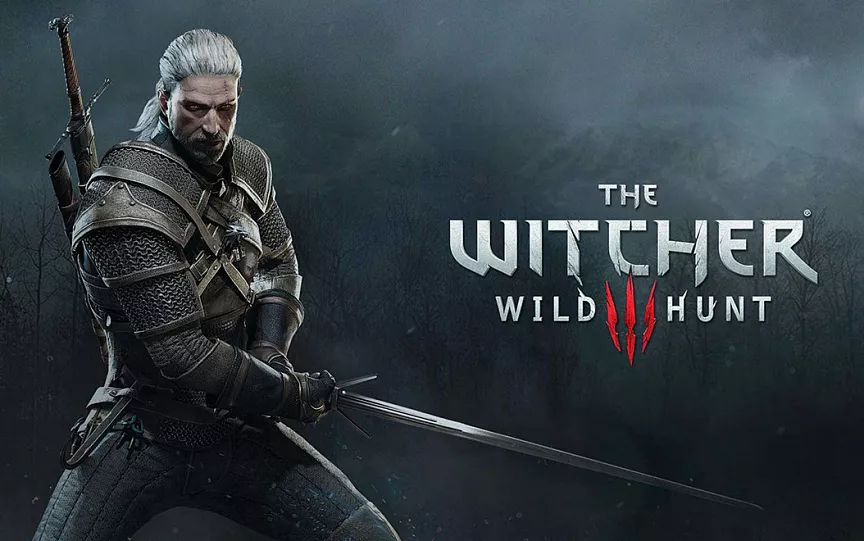

Ведьмак одна из тлучших рпг итгр в истории.Вышедшаяя в 2015 году была лучшей игрой 5-ти летия.игра рассказывает о путешествии ведьмака белого волка.
Впервые вселенная ведьмака появилась на страницак книг Анджея Сапковкого, писателя поразившего аудитроию своим тёмным фэнтези.вселенная же была наполнена полчищами монстров и опастностей с которыми герою надо было справиться.
За всё время вышло 3 игры по ведьмаку, самой лучшей считается 3-я часть из-за своего сюжета, персонажей и открытого мира
В игре присутствует много персонажей разной степени важности, кто-то важен для сюжета, квестов либо для вселонной в целом.Обойти всех мы не успеем, останавимся на двоих из самых важных - главном герое и его дочери.
Гдавным героем и вашим персонажем во всей серии является ведьмак Геральт из Ривии. По истории из книг Геральт был более менее обычным ведьмаком, выполнял заказы, истреблял чудовищ.Но однажду в городе люди устроили резню убивая эльфов и краснолюдов за то что они нелюди, Геральт решает заступиться но не успевает ничого сделать как его протыкоют вилами.Обиссилевший ведьк лежит на земле и умираьб и даже его возлюбленная чародейка йенифер ничего не может сделать и истощается.
В этот момент и появляется второй очень важный персонаж - Цири приёмная дочь Гералта (ведь ведьмаки бесплодны) и спасает его с йенифер.
история ГеральтаВторым важным персонажем является Цири, одарённая магичискими способностями девушка которая не в состоянии их полностью контролиролвать переживает приключения вместе с Геральтом и другими ведьмаками.
Большую часть времени Цири скрывалась от дикой охоты - орды эльфов из другого мира. Целью Дикой охоты было поямать Цири и подчинить её силу себе, но Вместе с Геральтом и другими персонажами дикая охота была остановленна.
история Цири